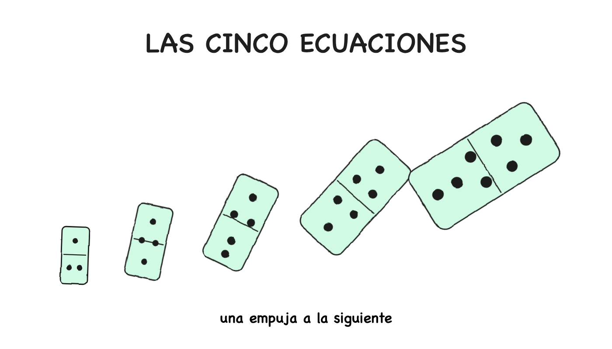
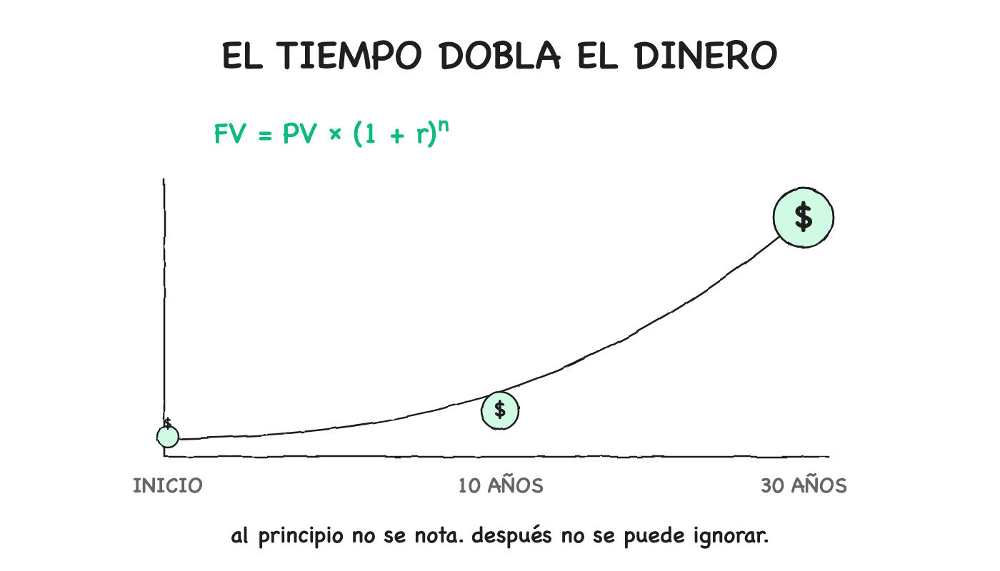
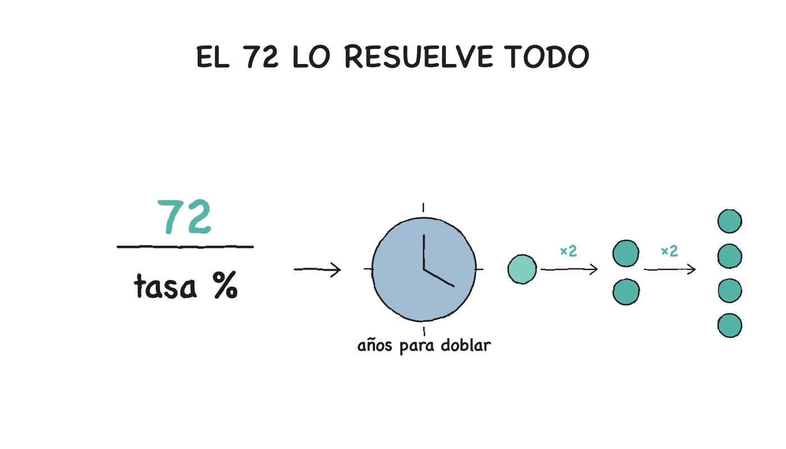
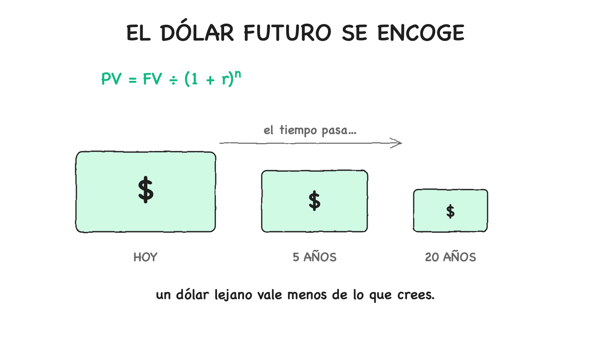
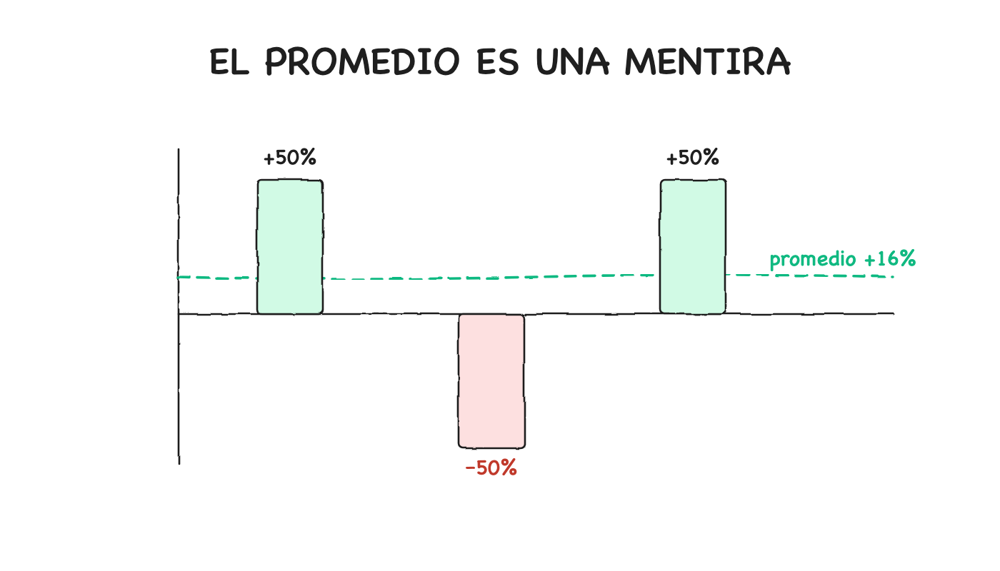
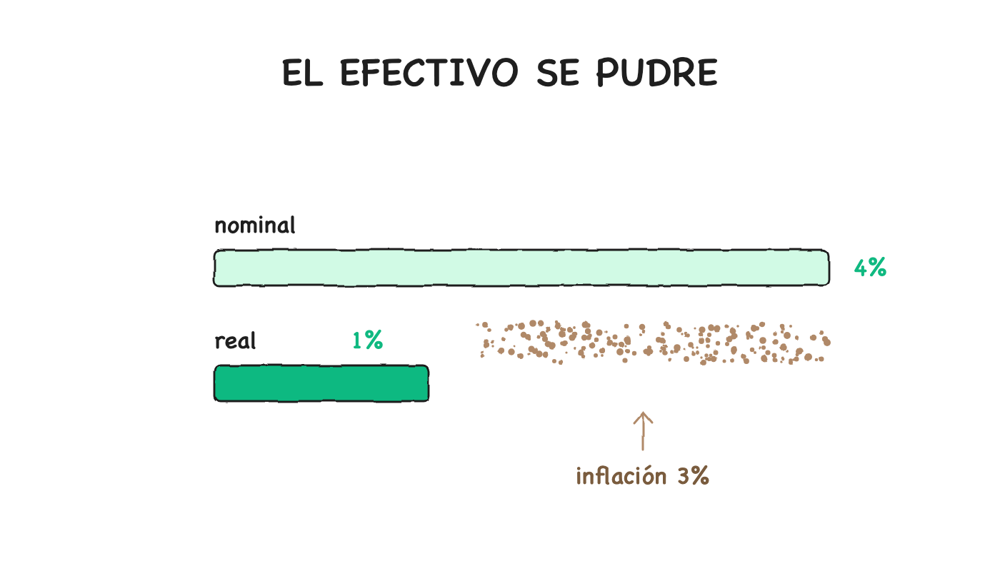

LAS CINCO ECUACIONES QUE GOBIERNAN TU VIDA FINANCIERA
Y por qué ignorarlas es una decisión, no un accidente
 BrAIn3 AGO 2026
BrAIn3 AGO 2026
BrAIn3 AGO 2026
BrAIn3 AGO 2026
La verdad incómoda: el dinero no es un misterio. Es matemática aplicada con traje. Cada decisión sobre un salario, una hipoteca, una comisión o una pensión ya está decidida por cinco ecuaciones — las conozcas o no. Y la diferencia entre tú y quien las maneja no es inteligencia: es responsabilidad. Ellos cargaron con el peso de aprender lo que a ti nadie te entregó.
La ignorancia financiera no es inocencia — es deuda. Y la deuda se paga con intereses. [Compuestos, para más señas.]
Cinco fórmulas. Cero jerga. El 90% de toda decisión financiera honesta.

La ecuación más importante del mundo del dinero:
Se lee: "tu dinero en el futuro = tu dinero ahora × (1 + tasa) elevado a los años." FV es el valor futuro, PV el presente, r la tasa (10% = 0.10), n los años.
La magia vive en el exponente ^n. Sin él, el dinero crece en línea recta. Con él, crece en una curva que empieza como un susurro y termina como un grito. [Ese grito es la diferencia entre una vida de trabajo y una vida de trabajo pagada.]
Ejemplo concreto. $10,000 al 8% anual, sin agregar un centavo:
| Año | Valor |
|---|---|
| 10 | $21,589 |
| 30 | $100,627 |
| 50 | $469,016 |
Mira la forma: cada década se duplica. La primera agrega ~$12K; la última, sola, ~$250K. Misma tasa, misma apuesta. El exponente hace todo el trabajo.
Por eso un joven de 25 que invierte $10K y nunca agrega nada termina con más dinero que un cuarentón que invierte $10K cada año. No es más listo: sostiene un exponente más grande.
El núcleo duro: el sacrificio presente es la moneda del futuro. Diferir la gratificación — no gastar hoy para sembrar lo que cosecharás en treinta años — es el acto de responsabilidad más básico que existe. El ganador no es el que acierta la jugada final: es el que hizo las 10,000 pequeñas renuncias invisibles que la hicieron posible. Atlas no se queja del peso; lo sostiene. [Atlas sostiene el mundo; Sísifo empuja la piedra. Uno construye, el otro solo sufre. ¿Cuál eres tú con tu dinero?]

Un atajo que existe desde 1494, cuando el fraile Luca Pacioli lo escribió en el libro que le dio a Europa la partida doble:
Todo el truco: al 6%, el dinero se duplica en 12 años (72 ÷ 6); al 9%, en 8. Exacto dentro de uno o dos puntos para cualquier tasa normal.
Con esto en la cabeza, conversaciones enteras cambian. Un bono al 4% → se duplica cada 18 años. Inflación al 6% → los precios se duplican cada 12 años. Una "segura" cuenta al 2% → se duplica cada 36 años, que para la mayoría es una vez en la vida adulta.
Y la parte que casi nadie enseña — la regla invertida: si algo pierde valor, la regla dice qué tan rápido se reduce a la mitad. Inflación al 3%: tu poder de compra se parte en 24 años. Al 6%: en 12. Al 9%: en 8.
La regla funciona en ambas direcciones: subir y bajar, crecer y pudrirse. [Toda curva que sube tiene su espejo — y el que no mira la curva de bajada con el mismo respeto va ciego de un ojo.]

Pregunta trampa: ¿$1,000 hoy o $1,000 dentro de un año? Casi todos dicen "hoy", y casi todos dan la razón equivocada ("porque podría gastarlos"). La razón real: $1,000 hoy se pueden invertir. Con un 6% disponible, hoy son $1,060 en un año — o, equivalentemente, $1,000 el año que viene valen solo ~$943 hoy.
Eso es el valor presente: la ecuación del crecimiento compuesto resuelta hacia atrás.
Sus consecuencias explican media industria financiera:
Es la ecuación de la integridad: quien la conoce mira cada promesa futura y pregunta ¿cuánto vale esto realmente hoy? — el resto toma el número al pie de la letra y paga de más, en silencio. Calcular el valor real de una promesa, sin autoengaño. La procrastinación es un descuento que le aplicas a tu propio futuro — cada "lo haré mañana" es un dólar que se encoge. [La honestidad empieza por casa: no mentirte sobre el tiempo.]

La ecuación que la industria financiera no quiere que conozcas. Supón que un fondo te da estos retornos en tres años: +50%, −50%, +50%. ¿Cuál es tu rendimiento promedio?
La respuesta instintiva: (50 − 50 + 50) ÷ 3 = 16.7%. ¡Se ve genial! La respuesta real: cerca de +7%. Tu dinero hizo $100 → $150 → $75 → $112.50 — una ganancia total del 12.5%, ~4% anual compuesto. No 16.7%.
El número que la industria ama anunciar es la media aritmética, el promedio simple. El que describe lo que les pasó a tus dólares es la media geométrica:
Una línea en cualquier hoja de cálculo: =GEOMEAN(...)−1. La regla despiadada debajo:
La media geométrica es siempre menor o igual que la media aritmética. Son iguales solo cuando todos los años tienen el mismo retorno.
Cuanto más volátil el retorno, más grande la brecha. Un fondo con +30% y −30% tiene media aritmética de 0% y geométrica de ~−4.6%: "en promedio" no hiciste nada; en realidad, perdiste. La volatilidad tiene un costo — se llama variance drag.
Por eso un 8% "suave" vale mucho más que un 8% "salvaje", aunque el folleto diga lo mismo. Y por eso un reporte honesto muestra el CAGR — la media geométrica por otro nombre.
Desde hoy, mira cada "rendimiento promedio" con una pregunta: ¿aritmética o geométrica? Si no te la quieren responder, ya sabes cuál es. [Mapa y territorio: la aritmética es el mapa bonito del corredor; la geométrica es el territorio donde vive tu dinero.]

Cuenta que paga 4%, inflación al 3%: tu dinero "creció 4%" — en realidad creció ~1% en poder de compra. Tus dólares se multiplicaron mientras cada dólar compraba menos.
O, en aproximación rápida:
Las consecuencias duelen:
La inflación es la única partida de tu vida financiera que nunca ves en ningún estado de cuenta: un impuesto invisible que te quita dos, tres, cinco por ciento de poder de compra cada año. Los ricos no ganan más retorno nominal: solo se aseguran de estar cómodamente por encima de la inflación. Todos los demás se vuelven más pobres en silencio mientras su saldo sube.
El dinero que no invertiste no está "a salvo". Está siendo gravado por la inflación a una tasa a la que nunca consentiste.
La frase más incómoda: la inacción es una decisión. El que no elige ya eligió — el statu quo, la cuenta al 0%, la inflación comiéndole el sueldo mientras esperaba el momento perfecto. Pensar en reales, no en nominales, es el interruptor que separa a quien entiende el dinero de quien solo lo maneja. [El que guarda bajo el colchón no es prudente: financia su propia decadencia, dólar a dólar.]

Juntas, son una lente que te deja ver a través de casi cualquier afirmación financiera:
| Ecuación | Qué hace por ti |
|---|---|
| Crecimiento compuesto | Entender por qué el tiempo vale más que el talento |
| Regla del 72 | Estimar cualquier duplicación en tres segundos |
| Valor presente | Cotizar una promesa futura con honestidad |
| Media geométrica | Leer un reporte de fondos sin que te engañen |
| Rendimiento real | Separar lo nominal de lo real al instante |
Cinco ecuaciones. Dos son álgebra reordenada. Una es un atajo de 1494. Las cinco caben en una servilleta.
La industria financiera no quiere que seas malo en matemáticas. Quiere que seas selectivamente malo: lo suficientemente bueno para firmar contratos y pagar comisiones, no lo suficientemente bueno para notar lo que los contratos están haciendo.
Esto no es una conspiración: es una característica. Toda industria que vende complejidad depende de que sus clientes no hagan las matemáticas subyacentes. Las cinco ecuaciones son toda la defensa — no contra el fraude, sino contra los malos negocios silenciosos disfrazados de lenguaje tranquilizador.
El dinero no es una fuerza misteriosa. Es un conjunto pequeño de ecuaciones que nunca te entregaron del todo. Quien parece rico o sabio no está dotado psíquicamente: corre las mismas cinco fórmulas, una y otra vez, sobre cada decisión. Ese es todo el "secreto".
Ninguna está oculta. Ninguna requiere un título. Ninguna cuesta nada. Todas son más viejas que tus abuelos.
El hábito mental más útil: cuando enfrentes una afirmación financiera, antes de sentir nada, pregúntate cuál de las cinco ecuaciones la gobierna — y corre el número.
Los ricos no son personas que vencen las ecuaciones. Son personas que nunca discutieron con ellas.
Y la pregunta que vale la pena contemplar: si cinco ecuaciones cortas, gratis y públicas deciden la mayor parte de tu vida financiera, y llevas años navegando el dinero sin ellas, la pregunta honesta no es "¿por qué no entiendo de finanzas?"
"¿Cuánto me ha costado ya no saber estas cinco cosas — y cuánto más estoy dispuesto a dejar que me cueste?"
El conocimiento no te hace rico. Te hace responsable — y la responsabilidad, bien cargada, es lo único que la vida paga con interés. La matemática está en la servilleta. El resto depende de ti.